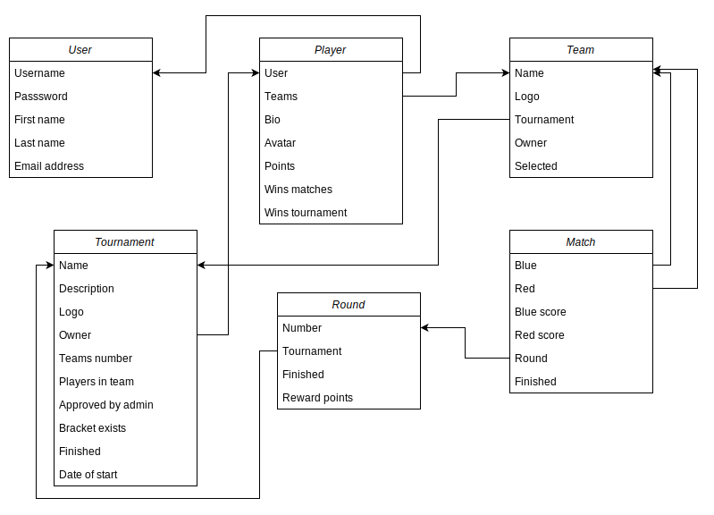

Studentské turnaje
- Autoři
- Ivan Golikov
xgolik00@stud.fit.vutbr.cz -
Návrh a úprava databáze, vytváření modelů, instalace databáze a projektu na server
- Maksym Koval
xkoval20@stud.fit.vutbr.cz -
Návrh a úprava databáze, vytváření modelů, registrace uživatele, schválení turnaje
- Anvar Kilybayev
xkilyb00@stud.fit.vutbr.cz -
Návrh a úprava databáze, vytváření turnajů a registrace účastníků
- URL aplikace
- https://team-project-iss.herokuapp.com/
Uživatelé systému pro testování
| Login | Heslo | Role |
|---|
| admin | admin | Administrátor |
| user | user | Registrovaný uživatel |
| - | - | Neregistrovaný uživatel |
Video
Implementace
Pro náš projekt jsme zvolili jazyk Python spolu s frameworkem Django, který využívá návrhový vzor MTV (model–template–view). Podle tohoto systému jsme projekt rozdělili do tří částí:
- Model pomáhá při práci s databází. Je to vrstva pro přístup k datům, která zpracovává data.
- Template je prezentační vrstva, která kompletně zpracovává část uživatelského rozhraní
- View se používá k provádění obchodní logiky a interakci s modelem pro přenos dat a vykreslování šablony
Hlavní části našeho projektu:
- Webapp je složka vytvořená automaticky Django, která obsahuje hlavní nastavení projektu.
- Tournaments zodpovídá za seznam turnajů na hlavní stránce, vytváří stránku pro každý jednotlivý turnaj, umožňuje vytvořit týmy pro tento turnaj, grid, round a match, potvrdit turnaj administrátorovi.
- Teams umožňují vytvořit/odstranit tým, přidat uživatele do týmů a odebrat z něj.
- Templates obsahuje html soubory.
- Media obsahuje media soubory.
Databáze

Instalace
Známé problémy
---